Deskripsi
Mereka yang berzodiak Sagitarius suka hal-hal baru dan dapat bersosialisasi dengan orang-orang baru. Namun, Sagitarius cenderung kurang sabar, yang kadang-kadang dapat mempengaruhi kemampuan mereka dalam mengambil keputusan.
Kompatibel
Aquarius dan gemini sangat cocok dengan sagitarius hal ini dikarenakan Mereka sering menikmati setiap percakapan bersama, gemar menjelajahi berbagai topik, dan saling menghargai pendapat satu sama lain, tingkat kecocokan mencapai 50%. Taurus dan cancer sangat tidak cocok dengan sagitarius karena Taurus menyukai momen kebersamaan yang tenang, seperti menikmati hidangan lezat di rumah, sambil menonton film bersama, tingkat ketidakcocokannya menpai 30-50%.
Tokoh Zodiak

Maudy Ayunda
19 Desember

Natasya Rizki
23 November

Taylor Swift
13 Desember